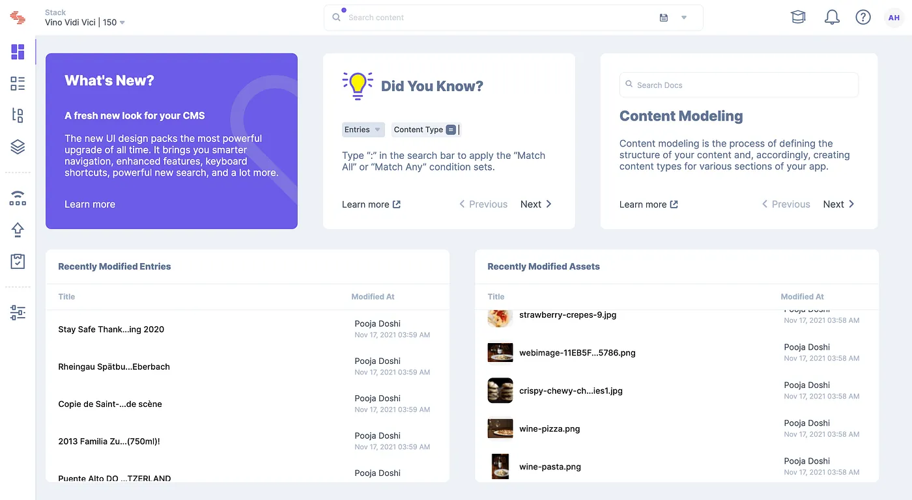

How does it differ from a traditional content management system? What are the benefits and disadvantages of using a headless CMS over a traditional one?
First, let’s review what a traditional content management system is.
A content management system is software built for creating, managing, organizing, classifying, and implementing your content on a website or app.
When you think of a traditional CMS, what do you think of? WordPress? Drupal? Joomla? Sitecore? SharePoint?
What are some of the benefits of a traditional CMS?
CMSs make it easy for non-developers to create and manage websites for companies, both small and large.
Collaboration is made easy and accessible from the platform.
Traditional CMSs offer some powerful SEO tools and plugins.
Most, if not all, offer a certain level of security, like Content-Security-Policy headers.
And they’re pretty cost-efficient, even for larger companies.
Now that we know what a traditional CMS looks like let’s compare it to a headless CMS.
While a traditional CMS is an all-in-one system, a headless CMS decouples content from the presentation layer (i.e., the front end of a website, app, etc.) It allows users to manage content in one place but deploy it across any digital channel. Headless offers the freedom to build instead of being locked into one front end.
Let’s dive deeper into the benefits of a headless CMS.
The omnichannel experience is improved since content can be delivered across many platforms.
Headless is easier for developers due to the freedom and flexibility of not being tied to whatever framework or language a traditional CMS uses.
Digital presence is future-proofed by easily adopting a new technology instead of being stuck with an outdated one.
Content is made more reusable and scalable.
The learning curve is lower due to not learning an entire traditional CMS architecture, although front-end knowledge is necessary.
Headless is faster and more agile. Traditional CMSs are monolithic architectures that are inherently bulky and slow.
What are your headless options?
In 2023, your options are endless.
1. Strapi
Jamstack’s current highest-rated headless CMS is Strapi.
"Strapi is the leading open-source headless CMS. It’s 100% JavaScript, fully customizable, supports TypeScript, and is developer-first. It saves API development time through a beautiful admin panel anyone can use."
Sanity.io is the platform for structured content. It comes with an open-source editing environment called Sanity Studio that you can customize with JavaScript, and a real-time hosted data store. Sanity has generous included quotas — so getting started is free.
Umbraco Heartcore is a headless CMS with a strong core. This means you will get a backend and editor experience that makes working with content delightful, structured, logical and scalable.
The strong core allows you to worry less about time-consuming administrative tasks and lets you focus on what’s important: creating great content and displaying it beautifully on any frontend you build.
Contentful Contentful is a content management developer platform with an API at its core.
API-first, not browser-first All the created content is accessible via an API. Bring your content anywhere, display it as you like.
Scalable cloud, not on-premises setup Your content is stored on our servers. They are fast, safe, secure, and we take care of all the maintenance.
Content-centric, not page-centric Organize and structure the content your way. Build a custom content model instead of dealing with fixed, predefined templates.
Just the content, no presets or templates Contentful delivers the content, and you design around it. We separate the content from presentation — the most flexible way.
Experience Extensions Easily integrate with your preferred marketing technologies (Brightcove, Marketo, Salesforce, Optimizely, etc.) without being bound to a preset of tools.
Workflows Set up and define workflows and approvals that map to your business processes for content management and publishing.
Modular Blocks Allow content editors to build and edit dynamic pages without needing a developer’s help.
Multiple Environments Create unlimited content environments, such as development, testing, staging or production, to map to your content production process.

Source: Contentstack
There are so many headless options to choose from, but these are a few to get started. Which headless CMS would you choose? Have you worked with a headless CMS before? Do you think headless is better than traditional, or vice versa? Let me know!